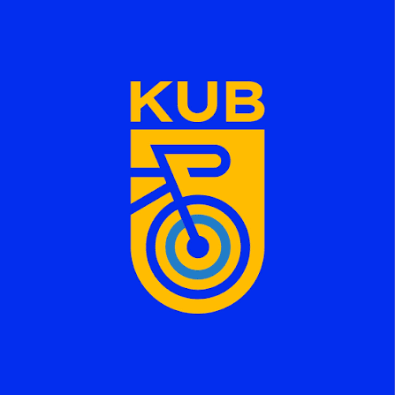

Dobrodošli u Križevačku udrugu biciklista!
Naša udruga okuplja ljubitelje biciklizma iz Križevaca i okolice. Organiziramo razne biciklističke ture, edukacije i događaje za naše članove.
Pridružite nam se i uživajte u vožnji bicikla kroz prekrasne krajolike naše regije!
Za više informacija o našim aktivnostima, posjetite stranicu O nama.

Što radimo
- organiziramo redovite vikend izlete po Prigorju i Podravini
- održavamo radionice za popravak bicikla
- zalažemo se za sigurnije biciklističke staze u gradu
- učimo djecu pravilima sigurne vožnje
Sljedeći izlet
Subota, 10. listopada 2026., polazak u 9:00. Pogledajte cijeli raspored izleta ili nam se javite preko stranice Kontakt.